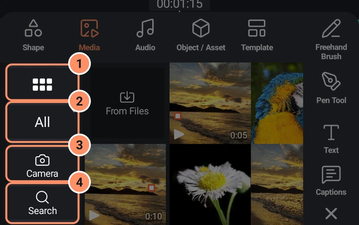

Add मेन्यू
शेप, फ़ोटो, वीडियो, साउंड, टेक्स्ट, ड्रॉइंग, कैमरा, लाइट, 3D मॉडल और बहुत कुछ कैसे जोड़ें।
टाइमलाइन क्षेत्र के निचले दाएँ कोने में गोल + बटन Add मेन्यू खोलता है। यह केवल तब दिखता है जब कुछ भी चयनित न हो; कोई लेयर चुनने पर यह टूल ग्रिड से बदल जाता है।
नई लेयर प्लेहेड से शुरू होती हैं और नई लेयर की लंबाई सेटिंग जितनी देर चलती हैं (डिफ़ॉल्ट रूप से 2 सेकंड)। फ़ोटो और शेप उसी लंबाई का उपयोग करते हैं; वीडियो और साउंड अपनी लंबाई का उपयोग करते हैं। कैमरा और लाइट लेयर पूरे प्रोजेक्ट तक चलती हैं।
मेन्यू के ऊपर टैब (शेप, मीडिया, ऑडियो, ऑब्जेक्ट / एसेट और टेम्पलेट) और दाईं ओर चार क्विक बटन हैं। टैब की पंक्ति को बाएँ स्वाइप करें तो टेम्पलेट के बाद एक और टैब, टूल्स, दिखता है। X इसे बंद करता है।

क्विक बटन
- फ्रीहैंड ब्रश एक ड्रॉइंग लेयर बनाता है और ड्रॉइंग एडिटर खोलता है। देखें शेप्स, ड्रॉइंग और मास्क।
- पेन टूल एक शेप लेयर बनाता है और पॉइंट एडिटर खोलता है ताकि आप बिंदु-दर-बिंदु शेप बना सकें।
- टेक्स्ट एक टेक्स्ट लेयर जोड़ता है और तुरंत टेक्स्ट एडिटर खोलता है। देखें टेक्स्ट और फ़ॉन्ट।
- कैप्शन ऑटो कैप्शन शीट खोलता है। देखें AI टूल्स।
शेप
चौवन तैयार शेप, एक पंक्ति में छह, ऐसे पेजों में जिन्हें आप स्वाइप करते हैं। किसी एक पर टैप करने से वह कैनवास के बीच में एक यादृच्छिक सुंदर रंग के साथ जुड़ जाता है।
उन्नीस शेप पैरामीट्रिक हैं और शेप विकल्प से एडिट होते हैं: वृत्त, राउंडेड आयत, प्लस, आर्क, त्रिभुज, कॉलआउट, पाई, पॉलीगॉन, मल्टीफॉइल, एरो, क्वाड, चाँद, आयत, स्टार, लाइन, चौड़ी लाइन, अनियमित पंचभुज, स्टैम्प और टियरड्रॉप। बाकी पैंतीस बिंदुओं से बनाए जाते हैं और पॉइंट एडिट करें से एडिट होते हैं: दिल, बादल, बिजली, चेक मार्क, X मार्क, रिंग, स्पीच बबल, शील्ड, घर, बुकमार्क, फ्लैग, चांद और सितारा, सूरज, पत्ती, सील बर्स्ट, हेक्सागन आउटलाइन, स्टार आउटलाइन, शेवरॉन, डबल ऐरो, कर्व्ड ऐरो, पैरेललोग्राम, ट्रैपेज़ॉइड, टिकट, टैग, ताज, आंख, छाता, म्यूज़िक नोट, बूंदों की जोड़ी, चाबी, लोकेशन पिन, राउंडेड प्ले, पॉज़, रिकॉर्ड और गियर।
मीडिया
आपकी फ़ोटो और वीडियो, नवीनतम पहले, एक ग्रिड में। जोड़ने के लिए किसी एक पर टैप करें, कैनवास में फ़िट होने के आकार में।
- सभी देखें Android के अपने फ़ोटो पिकर को खोलता है। इसे किसी अनुमति की आवश्यकता नहीं है।
- फ़ाइलों से, ग्रिड का पहला टाइल, Android का फ़ाइल पिकर खोलता है, ताकि आप किसी भी फ़ोल्डर से फ़ोटो या वीडियो ले सकें। इसे भी किसी अनुमति की आवश्यकता नहीं है।
- शीर्ष पर एल्बम सूची ग्रिड को सीमित करती है (डिफ़ॉल्ट सभी है)।
- कैमरा इन-ऐप कैमरा खोलता है। कैमरा के कंट्रोल के लिए देखें प्रोजेक्ट बनाना।
- खोजें ग्रिड में खोजता है ("फ़ोटो और वीडियो खोजें")।
- आपकी गैलरी की SVG फ़ाइलें भी यहाँ दिखती हैं।

पहली बार, Android आपकी फ़ोटो और वीडियो देखने की अनुमति माँगता है। Android 14 और नए पर आप केवल उन्हीं को अनुमति दे सकते हैं जिन्हें आप चुनते हैं। डिफ़ॉल्ट रूप से ऐप जोड़े गए मीडिया की एक प्रति प्रोजेक्ट के अंदर रखता है, ताकि बाद में मूल को हटाने पर भी प्रोजेक्ट काम करता रहे।
ऑडियो
आपके फ़ोन में संग्रहीत संगीत और साउंड। पहली बार, ऐप ऑडियो फ़ाइलें पढ़ने की अनुमति माँगता है।
- सभी देखें ऑडियो फ़ाइलों के लिए एक फ़ाइल पिकर खोलता है।
- फ़ाइलों से Android का फ़ाइल पिकर खोलता है, ताकि आप किसी भी फ़ोल्डर से ऑडियो फ़ाइल ले सकें। इसे किसी अनुमति की आवश्यकता नहीं है।
- टेक्स्ट टू स्पीच टाइप किए गए टेक्स्ट को आवाज़ में बदलता है: देखें ऑडियो।
- किसी साउंड टाइल को सुनने के लिए टैप करें, और रोकने के लिए फिर से टैप करें। इसे प्लेहेड पर प्रोजेक्ट में जोड़ने के लिए टाइल के नीचे + पट्टी पर टैप करें।
- म्यूज़िक और साउंड खोजें शीर्षक, फ़ाइल नाम, एल्बम और कलाकार से मेल खाता है।
ऑब्जेक्ट / एसेट
अन्य प्रकार की लेयर के लिए सात टाइलें।
- कैमरा एक कैमरा लेयर जोड़ता है जो पूरे प्रोजेक्ट तक चलती है। देखें कैमरा लेयर और 3D।
- लाइट एक लाइट जोड़ता है जो 3D मॉडल और 3D इफ़ेक्ट के टुकड़ों पर रोशनी डालती है। देखें कैमरा लेयर और 3D।
- नल एक अदृश्य सहायक लेयर जोड़ता है। इसे अन्य लेयर के लिए पैरेंट के रूप में या मोशन ट्रैकिंग के लक्ष्य के रूप में उपयोग करें।
- खाली ग्रुप एक खाली ग्रुप जोड़ता है।
- एसेट / प्रोजेक्ट आपके सहेजे गए एसेट की सूची, फिर आपके अन्य प्रोजेक्ट दिखाता है। प्लेहेड पर इसे ग्रुप के रूप में डालने के लिए किसी एक पर टैप करें। एक एसेट अपने स्रोत से लिंक रहता है; एक प्रोजेक्ट एक स्वतंत्र प्रति के रूप में डाला जाता है। देखें एसेट, टेम्पलेट और प्रीसेट।
- SVG इंपोर्ट करें
.svgफ़ाइलों (16 MB तक) के लिए एक फ़ाइल पिकर खोलता है। एक शेप शेप लेयर बनता है; कई एक ग्रुप बनते हैं। एक संदेश सूचीबद्ध करता है कि क्या आयात नहीं किया जा सका: टेक्स्ट, इमेज, एम्बेडेड सामग्री, एनिमेशन, क्लिपिंग पथ, मास्क, फ़िल्टर, मार्कर, डैश्ड या ग्रेडिएंट स्ट्रोक और पैटर्न फ़िल। ग्रेडिएंट केवल अपना पहला और अंतिम कलर रखते हैं। - 3D मॉडल
.obj,.glbऔर.gltfफ़ाइलों के लिए एक फ़ाइल पिकर खोलता है। अगर मॉडल की मटीरियल और चित्र फ़ाइलें हैं, तो उन्हें भी इसके साथ चुनें। फ़ाइलें कुल 256 MB तक हो सकती हैं, और 50,000 से अधिक त्रिभुज वाला मॉडल सरलीकृत रूप में दिखाया जाता है।

टेम्पलेट
सभी देखें आपके सहेजे गए टेम्पलेट का पूर्ण-स्क्रीन ग्रिड दिखाता है, और उसके नीचे प्रत्येक टेम्पलेट का एक टाइल होता है। किसी एक पर टैप करने से वह स्क्रीन खुलती है जहाँ आप अपना स्वयं का मीडिया डालते हैं। अभी कोई टेम्पलेट न हो तो पेज पर "यहां कुछ नहीं है। टेम्पलेट के रूप में सहेजे गए प्रोजेक्ट यहां दिखाई देते हैं।" लिखा दिखता है। देखें एसेट, टेम्पलेट और प्रीसेट।
टूल्स
टैब को बाएँ स्वाइप करें और टूल्स पर टैप करें। यह एडिटर छोड़े बिना होम स्क्रीन के टूल्स टैब वाले ही टूल खोलता है: कंप्रेस, ट्रिम, ऑडियो निकालें, GIF बनाएँ, वीडियो डाउनलोडर, इमेज एन्हांस करें, प्रोजेक्ट लिंक और QR कोड के लिए इम्पोर्टर, और डिवाइसों के बीच भेजें, जो खुला हुआ प्रोजेक्ट भेजता है। कौन-से टूल दिखें और किस क्रम में, यह सेटिंग्स > टूल्स में या टूल्स पेज के स्लाइडर बटन से तय होता है। टूल का काम पूरा होने पर प्रोजेक्ट में जोड़ें उसका परिणाम प्लेहेड पर नई लेयर के रूप में प्रोजेक्ट में डालता है (आवाज़ें साउंड लेयर पर जाती हैं); सेव करें पहले की तरह उसे गैलरी में सेव करता है। कंप्यूटर पर ये टूल बाईं पट्टी में सबसे नीचे टूल्स में हैं।